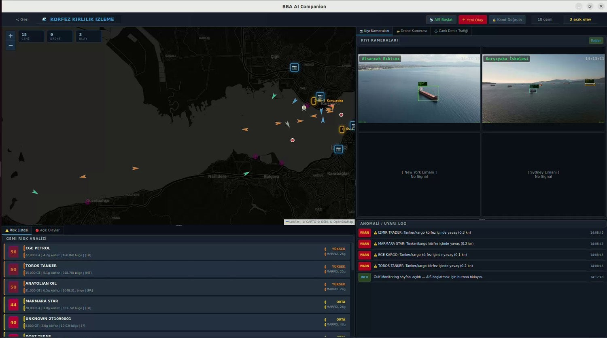
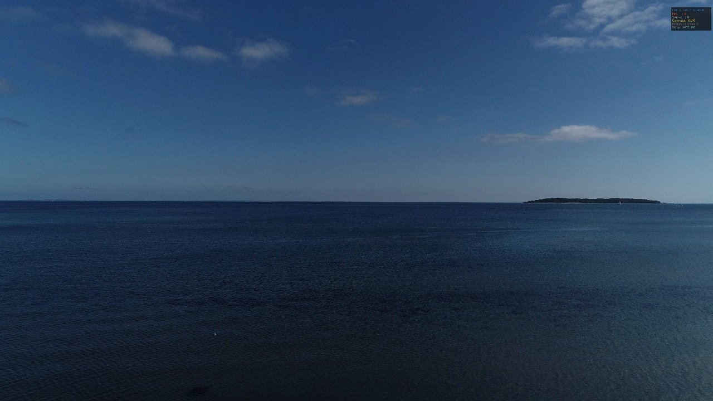
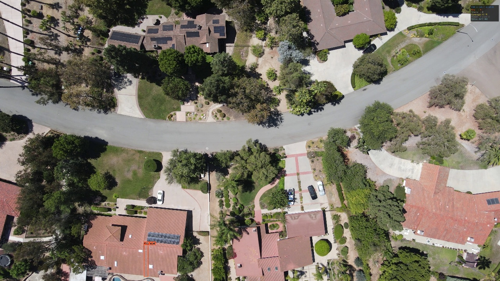

Any unmanned system, together with the fixed cameras already around it, kept in continuous routine observation. We control the aircraft, we process the imagery, and we write the result into the reports the institution already has to produce.
Three systems built on this, for two municipalities: coastal monitoring in Dubai, bay pollution monitoring and excavation tracking in İzmir.
Two parts, plainly. We control the flight, and we read what comes back. One survey flight over the coast returns fifteen separate answers automatically, with a dated report at the end, running on the municipality's own servers.


Every vessel in the bay tracked from AIS, every coastal camera watched for discharge and surface anomaly. When something is released into the water, the system already knows which vessels were there, at what speed, and what they were carrying.

Water, gas and electricity open the same streets, and the record of who opened what, when, and whether it was properly restored lives in a folder of photographs nobody can search. We collect the imagery from three sources at once and measure the difference between two dates.
The pipeline is not limited to excavation. With the same AI image processing and the same interface, any structure or works the municipality is responsible for can be followed the same way: roads, bridges, buildings, parks, shorelines. Anything with a before and an after.
Most of this runs on imagery the municipality already produces: cameras already installed, contractor photographs taken for progress payments, surveys already being flown. Where flights are needed they are carried out by the municipality or by a licensed local operator. We supply the software and the reporting. Everything can run inside the institution, offline, with role-based access and a dated, exportable report from every run.
That is all we need to show what the system produces, on your own district, at no cost and with nothing to install.
Message us on WhatsApp